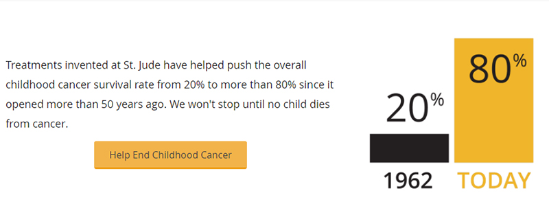

A Good Cause Worth Celebrating
At iTalkBB, we’re dedicated to providing a better life for foreign-born individuals living in the United States, Canada, Australia, and Singapore. Which is why we’re proud to be united with St. Jude in realizing a goal that inspires us all: curing childhood cancer.
As one of the best children’s hospitals around the world, St. Jude will organize “Walk/Run to End Childhood Cancer" every year to increase the public awareness of childhood cancer. As a proud sponsor, iTalkBB established the strategic partnership with St. Jude in 2012, and has been supporting the event for 5 years.

On September 27th, 2017, the annual “Walk/Run to End Childhood Cancer" was held in Nationals Park, D.C. A lot of iTalkBB employees and their families joined the walk, in order to help more people understand, treat and defeat childhood cancer and other life-threatening diseases.
iTalkBB Employee and Her Families in the “Walk/Run to End Childhood Cancer" 2017
iTalkBB Employees in the “Walk/Run to End Childhood Cancer" 2017

iTalkBB Corporate T-shirt for the “Walk/Run to End Childhood Cancer" 2017
Why St. Jude? Why It Matters?
St. Jude Children’s Research Hospital® is leading the way in which the world understands, treats, and defeats childhood cancer and other life-threatening diseases.
It is instantly clear when you visit St. Jude that it is a place of abundant creativity and considerable innovation. The doctors, nurses and other staff are engaged and excited about their work. What you see when you visit St. Jude is indeed almost magical. Except that it isn’t magic. It is some of the most important scientific research benefitting not only the patients at St. Jude, but kids with cancer around the world.

Since St. Jude opened its doors in 1962, it has changed the way the world understands and treats pediatric cancer. It is one-part children’s hospital and one-part research center. Discoveries made at St. Jude hospital are shared freely so that doctors across the world can expand on protocols and treatments and help cure kids worldwide. So far, St. Jude has pushed childhood cancer survival from 20 percent to more than 80 percent. In the next decade, the research hospital hopes to push survival rates to 90 percent.
At St. Jude, no family ever receives a bill for anything – treatment, travel, housing or food. It takes close to $2 million a day to run St. Jude and 75 percent of those funds come from corporate partners and individual donors.

It was that special place that St. Jude possesses in so many hearts and its message of hope and family that led iTalkBB to creating an ever-growing philanthropic and cause-marketing partnership with the organization.
Together, We Make a Difference!
From 2012-2017, iTalkBB is a team sponsor for St. Jude’s “Walk/Run to End Childhood Cancer".

iTalkBB Team in 2017

iTalkBB Team in 2015
iTalkBB Team in 2014
iTalkBB Team in 2013
iTalkBB also creates fundraising events and encourage employees to donate for childhood cancer patients from St. Jude.
iTalkBB truly believes that we can make a positive impact on our community and make a lasting difference in people’s lives.
Our core mission is to make a difference in people’s lives and this partnership is a natural next step that allows us to take our efforts to the national level and raise awareness of this important cause.